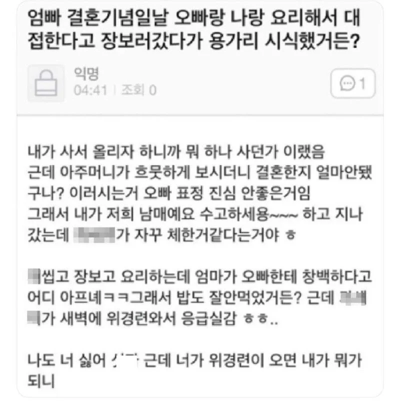

여동생과 결혼할 생각에 그만;;
댓글
ㅉㅉ 누나엿으면 안그랫는데
누선족 네이놈!!!
죽어버려!ㅋㅋㅋㅋㅋㅋㅋㅋㅋㅋㅋㅋ
나 여동생 있는데 이거 맞다
강한부정은 강한긍정
누선족이었다고 한다..
안들키려고 필사의 연기중인거야
앞에서는 존나 사이나쁜척하고 뒤에서는
이후 메차쿠차
별개로 위경련 개시발 새키
내가 커피만 마시면 위경련 와서 커피 아예 끊음
나도 그래서 디카페인만 마심
제로콜라에 카페인도 빡세서 콜라도 제로제로만 마심
별개로 탄산마셔도 속 존나안좋아져서 슬프다
나 디카페인도 안 통함 ㅋㅋㅋ 카페인이 문제가 아니라 커피 자체 성분이 문제인듯
핫식스 이런건 또 ㄱㅊ음
ㅋㅋㅋㅋㅋ 시발 얼마나 썌게온거야
모자이크는 왜 하는거여
욕 쓰면 차단 먹는 선비 커뮤에서 따온 거니까
위경련 << 약국에서 '경진제'라는거 판다
신짜 쎄게오면 물도 토해서 힘들겟지만
경진제 먹으면 위경련 빠르게 낫는다
경진제가 아니고 진경제..
맞다 진경제 ㅇㅇ 위경련 온지 오래돼서 까뭇다 ㄳㄳ
여러분 위경련이 이렇게 무섭습니다

여친이름 잘못부를 사람이네
위경련엔 부스코판
그러게 눈코입과 신체 배치가 사람처럼 생겼어야지
누나였으면 달랐지 암
누나였으면 그자리에서 풍맞고 쓰러졌다
스트레스성은 인정이지
항항 위경련
장경련은 한 2번 경험해봤는데
위경련은 한번도 못해봤네
위장아님?
어.....?? 그렇네
질경련 아닌 게 어디야
배알마저 꼴려버리네
그러게, 니가 속이 안 좋았으면 입덧이라고 해줄 텐데...
브라콤 ㄷㄷ;